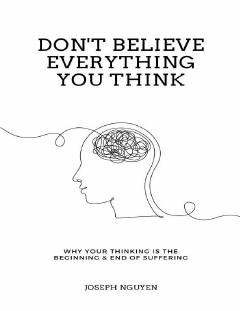

DBFikrlarning tub mohiyatini anglab, ichki xotirjamlik va baxtga erishish yo'llari.
Bu kitob inson azob-uqubatlarining tub ildizi fikrlash ekanligini tushuntiradi va uni qanday yengish yo'llarini o'rgatadi. Muallif Joseph Nguyen fikrlar va ongimizdagi jarayonlarni boshqarish orqali qanday qilib ichki xotirjamlik va baxtga erishish mumkinligini ko'rsatib beradi.